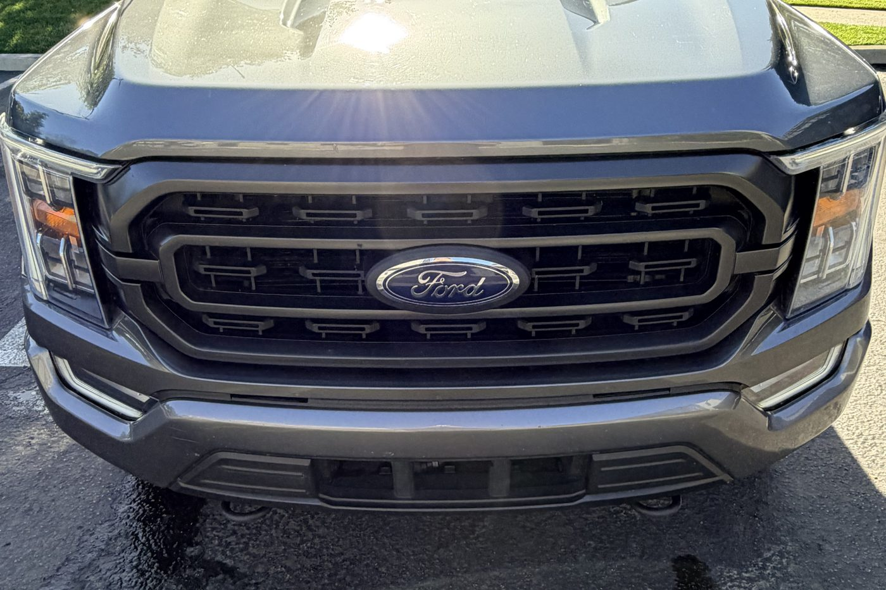
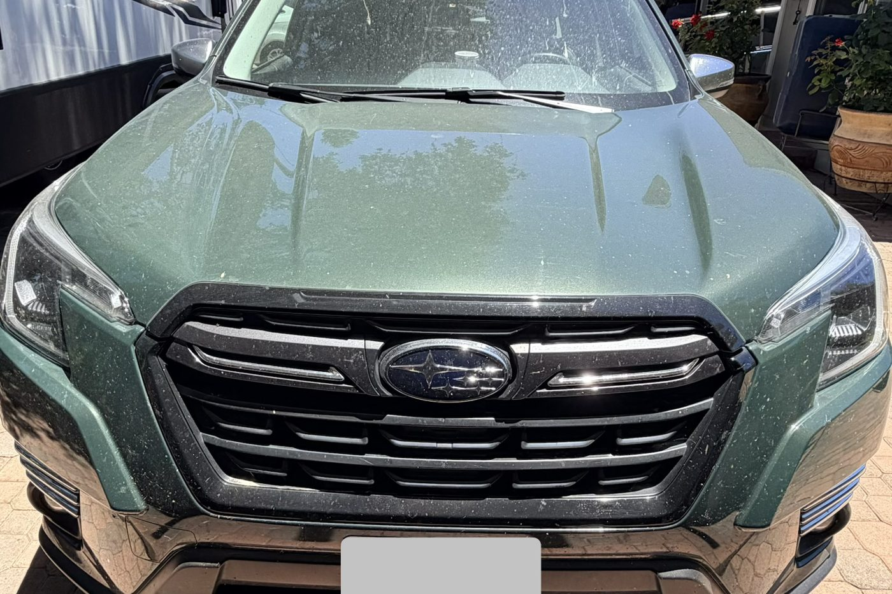
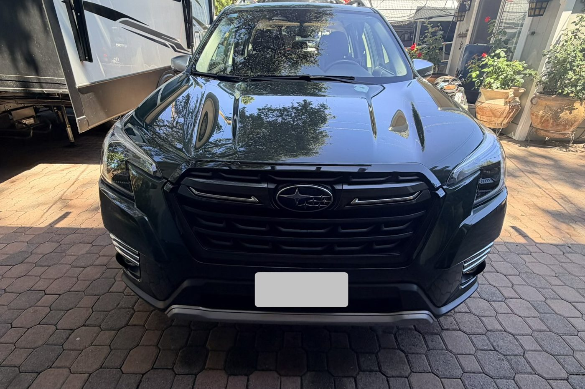
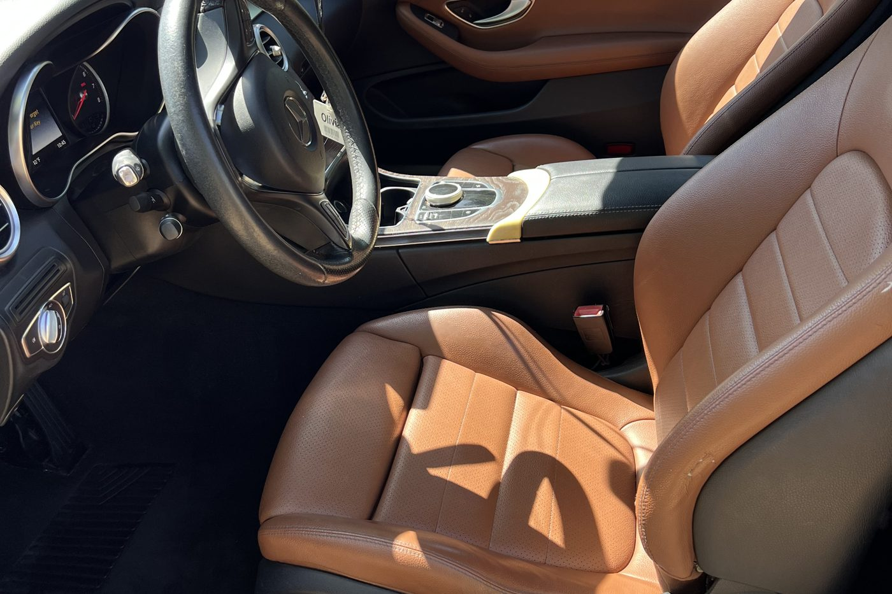
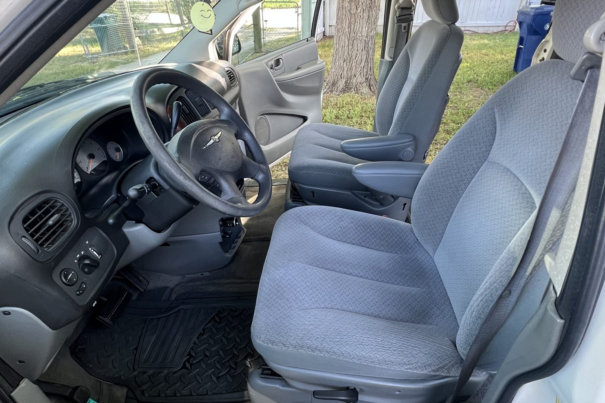
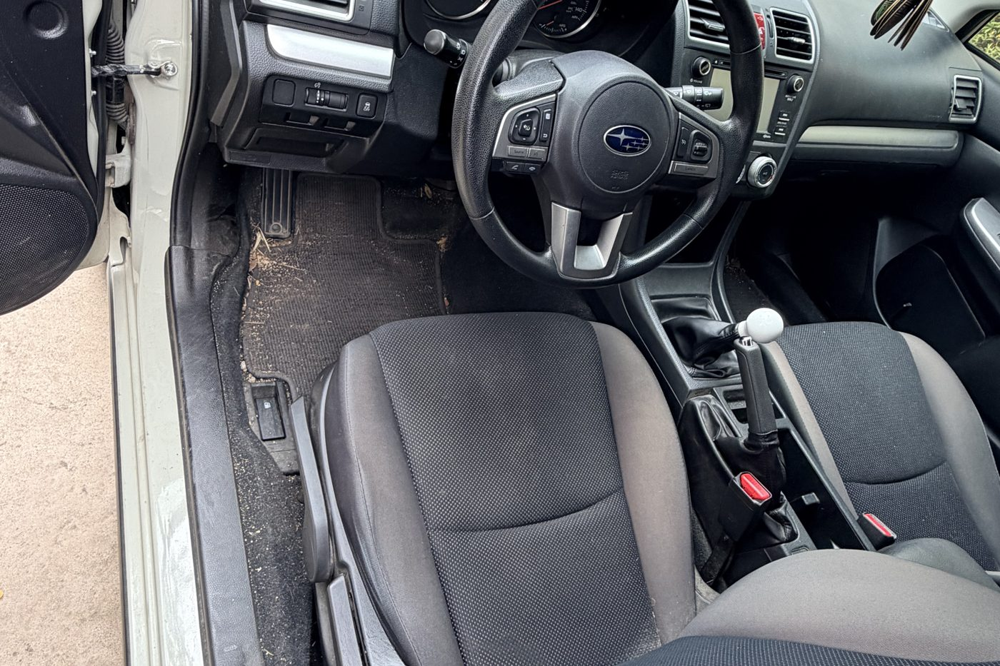

Before and after
Client work, interior resets, exterior cleanups, and visible results.
Browse examples of detailing work, then send an inquiry with your vehicle, location, and best requested service window.
Drag to reveal
Slide to see the difference.
Drag the handle left and right to wipe between the before and after.
Finished work
A look at recent details.






Ready for your vehicle?